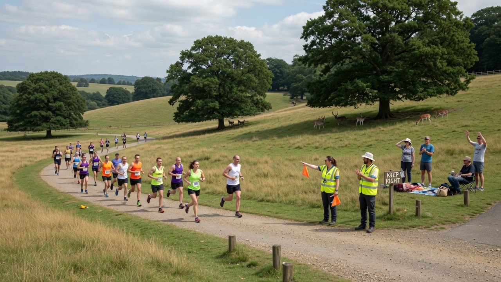

Tue
18:15 & 19:00
Club run — Speedy and Steady groups, 5 or 7 miles.
Sennocke Centre, Sevenoaks School

Club nights every week. Races when you want them. Our own Sevenoaks 7 each July.
These don’t move. Contact us before your first Tuesday.
Wear the vest and you’re racing for Sevenoaks. Filter the calendar below once you know which series you fancy.
Winter cross country for club runners — about 5–6 miles, on Sunday mornings at parks across Kent. We host a match at Knole.
More information →Saturday cross country through the autumn and winter, from juniors to senior men and women. No upper time limit.
More information →A season of 10 Kent road races, from 5 miles and 10K to half marathon. Best six count for individuals; best eight rounds for the team.
More information →Kent championships on the road, over the country and on the track. Some also count for the Grand Prix.
More information →Sprints, jumps, throws and middle-distance, including the over-35s league and Kent Masters.
More information →Local 10ks, trails, parkrun and whatever members are training for. No obligation.
More information →Want the fuller picture — who to ask, how the leagues work? See competitive events. Club Grand Prix tables are under Members. Juniors have their own leagues — Sportshall, the Kent Young Athletes League and county champs. See Juniors.
Only the days with a race or club event.